Stephen Su
Project 4A Overview
In this project, we learn about how image warping and mosaicing. Using two or more photographs, we will create an image mosaic by projectively warping images and stitching them together. To warp images, we need to define correspondence points between each image and calculate a homography transformation matrix from our correspondence points. Afterwards, we can stitch the images together by aligning each image.
Part 1: Shooting and Digitizing Pictures
Before we start, we need to first a variety of pictures to use for testing. A rule of thumb while taking these pictures is to keep the center of projection (COP) fixed and take pictures by rotating the camera along the center of projection. It is generally recommended to have between 40% and 70% overlap between pictures. These pictures were all taken with a iPhone 12 Pro.

Adobe Founder's Tower at Night |

Macbook with Sticker |

Soda Hall 1 |

Soda Hall 2 |

Hearst Mining Building 1 |

Hearst Mining Building 2 |

Hearst Mining Building 3 |

Sturdy the Bear 1 |

Sturdy the Bear 2 |

Sturdy the Bear 3 |
Part 2: Recovering Homographies
To warp our images, we first need to recover the homography transformation matrix. The homography transformation matrix is a 3x3 matrix that maps points from one image $p$ to points in another image $p'$. The image transformation is then represented as $p'=Hp$, with H having 8 degrees of freedom. Below is an equation representing $p'=Hp$.
$$\begin{bmatrix} a && b && c \\ d && e && f \\ g && h && 1 \\ \end{bmatrix} \begin{bmatrix} x \\ y \\ 1 \\ \end{bmatrix} = \begin{bmatrix} wx' \\ wy' \\ w \\ \end{bmatrix} $$The goal here is to solve for the 8 unknown variables in the homography matrix. If we expand this matrix multiplication into a set of equations, we get:
\begin{cases} ax + by + c = wx' \\ dx + ey + f = wy' \\ gx + hy + 1 = w \\ \end{cases}Since we know the value of $w$, we can subsitute the value of $w$ into the first two equations. We end up with the following result.
\begin{cases} ax + by + c = (gx + hy + 1)x' \\ dx + ey + f = (gx + hy + 1)y' \\ \end{cases} \begin{cases} ax + by + c - gxx' - hx'y = x' \\ dx + ey + f - gxy' - hyy' = y' \\ \end{cases} \begin{cases} ax + by + c + d(0) + e(0) + f(0)- gxx' - hx'y = x' \\ a(0) + b(0) + c(0) + dx + ey + f - gxy' - hyy' = y' \\ \end{cases}If we put these equations into matrix form, we get the following matrix multiplication.
$$ \begin{bmatrix} x && y && 1 && 0 && 0 && 0 && xx' && x'y \\ 0 && 0 && 0 && x && y && 1 && xy' && yy' \\ \end{bmatrix} \begin{bmatrix} a \\ b \\ c \\ d \\ e \\ f \\ g \\ h \\ \end{bmatrix} = \begin{bmatrix} x' \\ y' \\ \end{bmatrix} $$From here, we can derive a general form to solve for the values in the homography matrix given multiple correspondence points, where each correspondence point is represented as $(x_i, y_i)$ in our first image and $(x'_i, y'_i)$ for our second image.
$$ \begin{bmatrix} \vdots && \vdots && \vdots && \vdots && \vdots && \vdots && \vdots && \vdots \\ x_i && y_i && 1 && 0 && 0 && 0 && x_i x'_i && x'_i y_i \\ 0 && 0 && 0 && x_i && y_i && 1 && x_i y'_i && y_i y'_i \\ \vdots && \vdots && \vdots && \vdots && \vdots && \vdots && \vdots && \vdots \\ \end{bmatrix} \begin{bmatrix} a \\ b \\ c \\ d \\ e \\ f \\ g \\ h \\ \end{bmatrix} = \begin{bmatrix} \vdots \\ x'_i \\ y'_i \\ \vdots \\ \end{bmatrix} $$Since we have an overconstrained system of equations in this case, we need to approximate the solution to the homography matrix using Least Squares.
Part 3: Image Rectification
With a given homography matrix $H$, we can now warp our images from one image to another. Firstly, we need to find the size of the resulting warped image by first applying our homography matrix $H$ to the four corners of our input image. The resulting width and height is the differences in the maximum and minimum $x$ and $y$ coordinates of all four corners. Next, using the same corners, we draw out a mask containing points of where our image would be warped to, using the skimage.ndimage.polygon function. We may need to shift our corners such that all corners have a nonnegative $x$ and $y$ value. Lastly, with the mask, we can use an inverse warping technique by multiplying the points in our mask by $H^{-1}$, the inverse of our homography matrix, to interpolate the pixel value at each location. Our method will use bilinear interpolation through the scipy.interpolate.griddata function.
The following images involves rectifying images with a planar surface, often a square or a rectangle, and warping them such that the surface is front-facing. Since we are only working with one image, we need to define correspondence points both on the image itself as well as manually defining the square or rectangular plane.
| Adobe |
Adobe Founder's Tower at Night |

Adobe Founder's Tower at Night Rectified |

Cropped Adobe Logo |
|---|
| Macbook |
Macbook |

Macbook Rectified |

Cropped Macbook |
|---|
As seen in the Macbook example, because the points were manually selected (and often error prone), the results can be extremely sensitive to small errors in the point selection. We are only using four points to define a rectangular plane, and as a result, the homography recovery is very unstable and prone to noise.
Part 4: Blending Images Into a Mosaic
Now that we are able to warp our images, we now need to blend our images. Below are some images we want to blend.
|
Soda Hall Fifth Floor Left |
Soda Hall Fifth Floor Right |
Firstly, we want to keep the left image still, and warp the right image into the left image. Then, we need to adjust the two images such that the correspondence points align with each other, which is often done using a shift of both images calculated from the corners of the warped image. After the alignment process, we pad both images such that they are the same size, by taking the maximum dimensions of the two images.
At this point, we have our two images, one unwarpped and one warpped, aligned together. If we use a naive blending technique where we stack the two images on top of each other, it looks something like this:

Soda Hall Naive Blend |
Although the picture doesn't look bad, you can clearly see the seems where one image overlaps the other. This is where alpha blending comes in. To alpha blend, we first start by computing the distance transform of the two images we want to blend, using the scipy.ndimage.distance_transform_edt function. After normalizing, we get a distance transform as that looks like the following:
|
Soda Hall Fifth Floor Left Distance Transform |
Soda Hall Fifth Floor Right Distance Transform |
We can set our alpha mask to the regions where the left distance transform is greater than the right distance transform, and our mask will look like the following:

Mask where left distance transform > right distance transform |
With this mask, we will use blending techniques from Project 2 where we used a Gaussian and Laplacian stack to perform a low-pass and high-pass of both images, and blend them together by adding and collapsing the stacks. The results are below:

Soda Hall Fifth Floor |
Here are some more mosaics created with the same technique, extended to three pictures.
Example 2: Hearst Mining Building
|
Hearst Mining Building 1 |
Hearst Mining Building 2 |
Hearst Mining Building 3 |

Hearst Mining Building |
Example 3: Sturdy the Bear
|
Sturdy the Bear 1 |
Sturdy the Bear 2 |
Sturdy the Bear 3 |

Sturdy the Bear |
It was here where I learned that it is easier to create mosaics out of objects with clear correspondences, such as buildings with sharp corners. The correspondences for this mosaic was hard to define due to the clutterness of the tree's leaves making it hard to tell which correspondence point goes where.
Project Insights
I enjoyed doing this project and learning more about stitching together images using a Homography. Although this project took many hours, I was extremely satisfied in the end to see my results materialize.
Project 4B Overview
In this project, our goal is to automate the process of selecting correspondence points to produce a homography matrix instead of manually selecting correspondence points. Once we have the correspondence points, we can then proceed with constructing a mosaic similar to the process in the prevous portion of the project. The process of detecting correspondence points is highly inspired from the paper Multi-Image Matching using Multi-Scale Oriented Patches by Brown et al. with several simplifications.
Part 1: Detecting Corner Features
The first step requires computing possible correspondence points. Generally, good correspondence points exist in corners. In order to compute corners, we used the Harris Corner Detector to compute a large set of points. The Harris Corner Detector also assigns a strength value to each corner, indicating the corner response. A large strength value correlates to a higher likelihood of the point being a corner instead of an edge or a flat region. The results from applying the Harris Corner Detector can be seen below on the photos from Soda Hall.
|
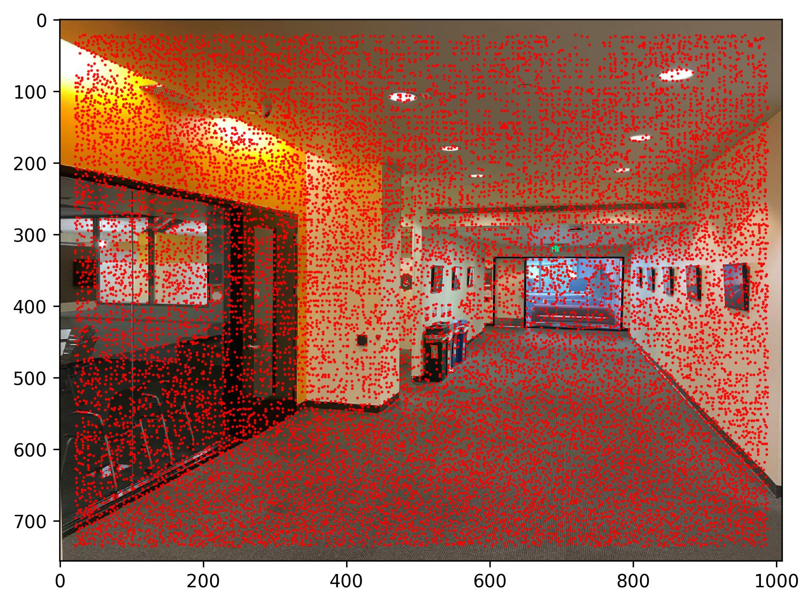
Soda Hall Fifth Floor Left |
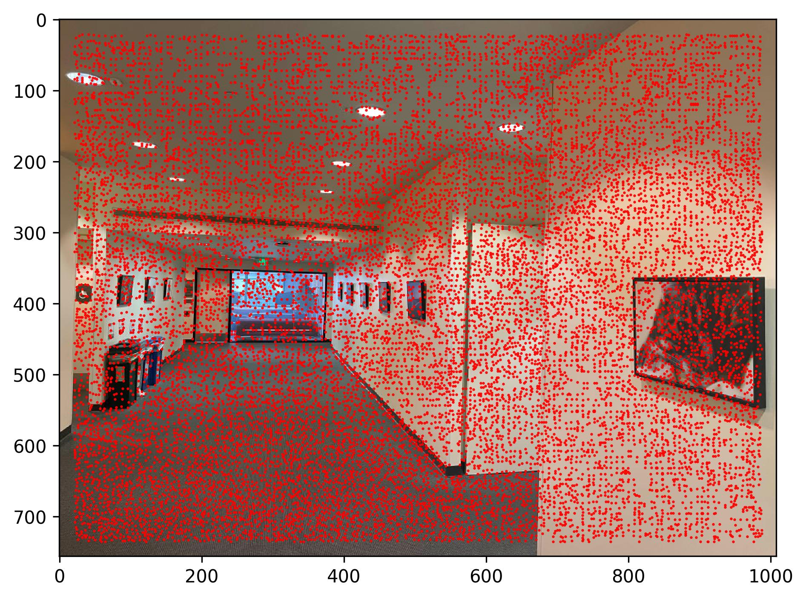
Soda Hall Fifth Floor Right |
|
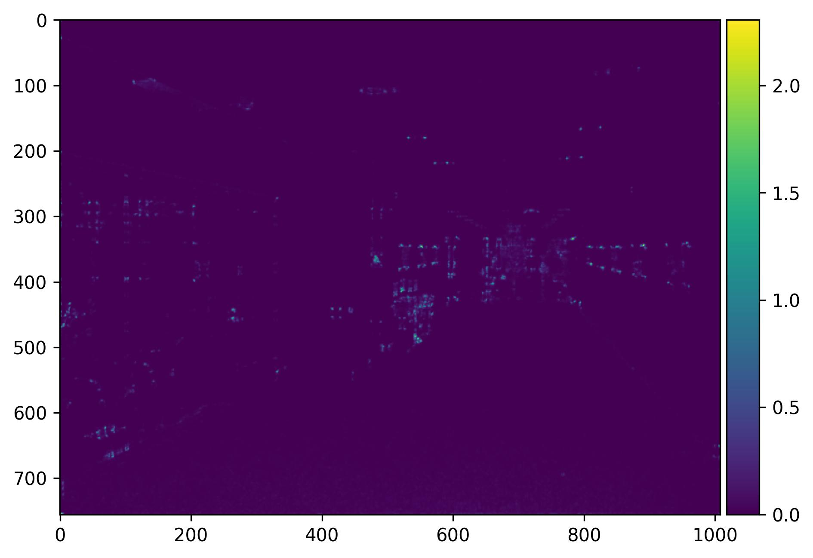
Left Corner Response |
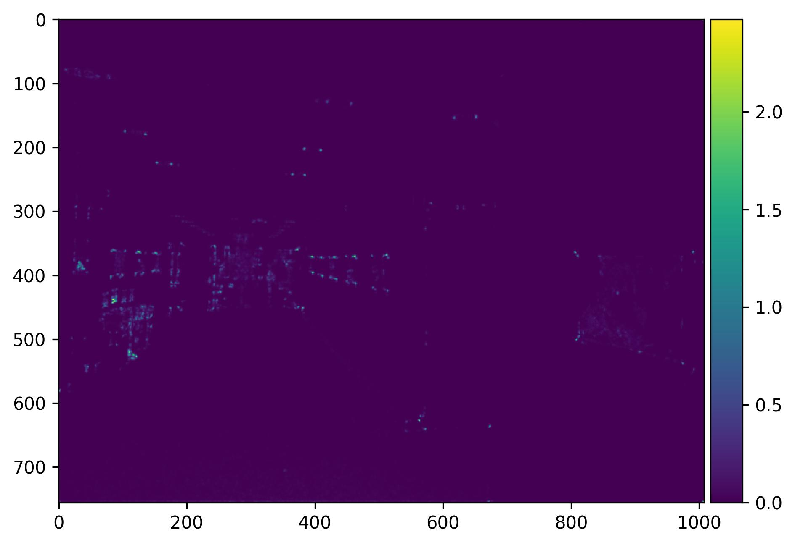
Right Corner Response |
Adaptive Non-Maximal Supression (ANMS)
One characteristic that stands out from the points generated by the Harris Corner Detector is how many points we are working with. Having a large amount of points will make further computations down the line more difficult and expensive, so it is in our interest to reduce the number of points. Notice how clustered some of the points are in some regions. We'd much rather have a set of points that spread out across the whole image. This is where Adaptive Non-Maximal Suppression comes in. Adaptive Non-Maximal Suppression (ANMS) is a strategy to filter down points based on an $r$ score. The $r$ score is defined as follows: for a point $x_i$, $r_i$ is defined as $$ r_i = \min ||x_i - x_j||_2 \; s.t. \; f(x_i) < c_{robust}f(x_j), \; x_j \in \mathcal{I} $$ where $\mathcal{I}$ is the set of all harris points, $f$ is a function that maps a point to the corner response strength from our Harris Corner Detector, and $c_{robust}$ is an arbitary value we choose to filter out the points. For the sake of this project we will be using $c_{robust} = 0.9$.
Once we calculate the $r$ score for all harris points, we can filter out points by picking the $n$ points with the highest $r$ score. Below are the results after applying this strategy.
|
Soda Left with $n=750$ |
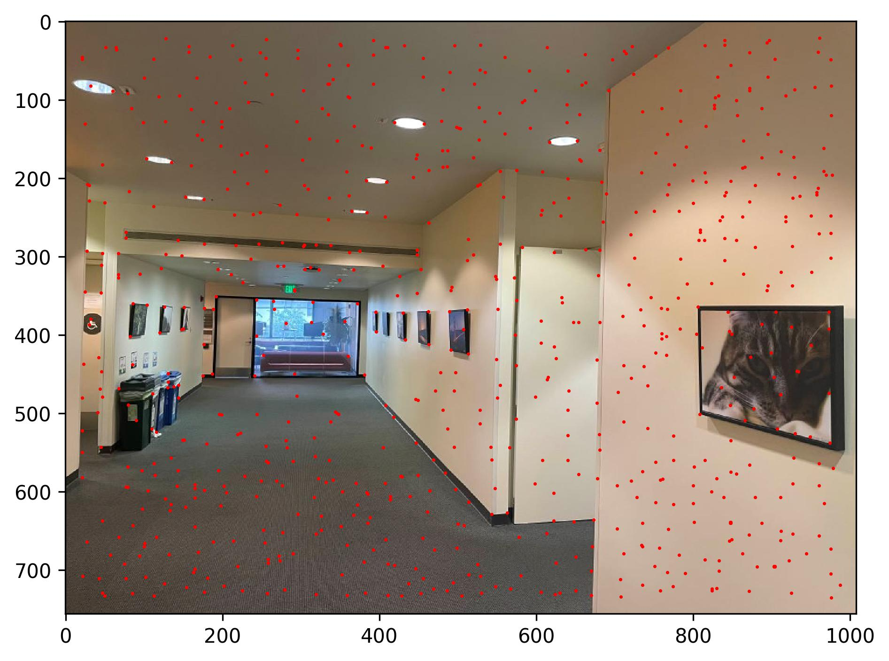
Soda Right with $n=750$ |
As you can see, the points are now more spread out rather than cluttered next to each other.
Part 2: Extracting Feature Descriptors
With these points now, our goal is to match points from the left image to the right image. To do this, we first need to extract features from each point. This is in the form of capturing a 40x40 pixel patch around each point. After capturing each patch, we want to sample the pixels in a lower frequency, resulting in a 8x8 pixel patch. The process of sampling is done with anti-aliasing enabled. After sampling from the patch, we then need to bias/gain normalize the patch to make the features invariant to affine changes in intensity. After extracting our normalized 8x8 pixel patch, we can flatten the patch to produce a descriptor vector for each point. Below are some figures to describe the process.
|
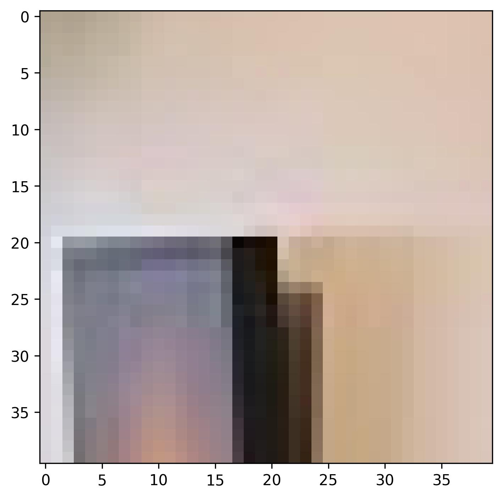
Example 40x40 Patch |
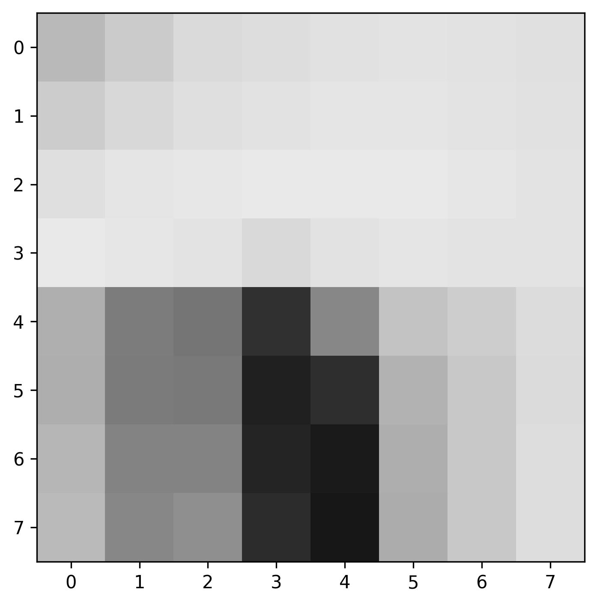
Example 8x8 Patch |
Part 3: Matching Feature Descriptors
To match the points, we run a nearest neighbor algorithm on the descriptor vectors, keeping only the nearest and second nearest neighboring descriptor vector. If the ratio of the distances between the nearest neighbor and the second nearest neighbor is below a certain threshold $t$, then we have found a match. For this project, the threshold $t$ is set to $0.4$. The idea behind this is that if we have two descriptor vectors that are close in terms of distance, we are unsure of which of the two points to match to. Since we are unsure, the easiest way to deal with this is to just throw the point out (i.e. no match). Below are the points left over after matching the points from each image.
|
Soda Left Matching Points |
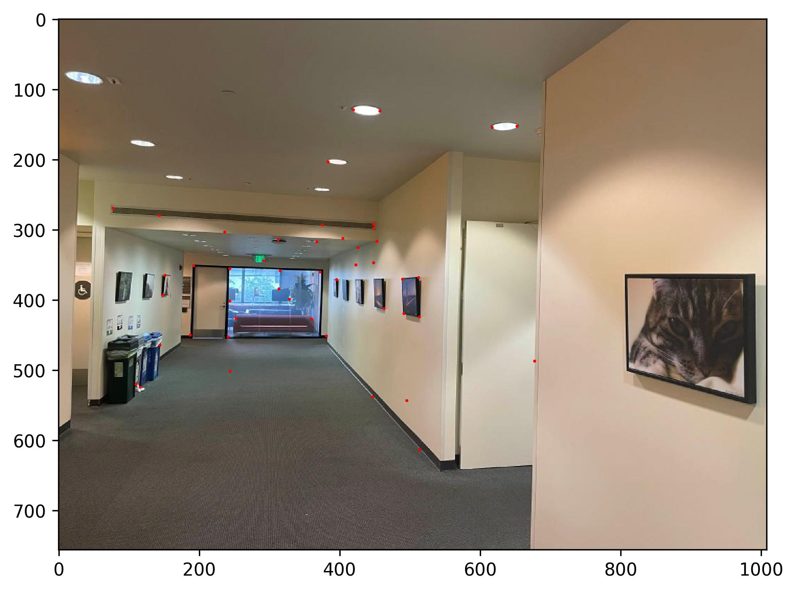
Soda Right Matching Points |
Part 4: Random Sample Consensus (RANSAC)
Even after the matching process, it is still possible to end up with poor matches, as seen in the images above. In order to cut down on the number of outliers, we apply a strategy called Random Sample Consensus (RANSAC). RANSAC will act as our final filter to narrow down the number of correspondence points. The algorithm for RANSAC is as follows:
- Select a set of four points at random (the minimum needed to compute a homography matrix)
- Compute the exact homography matrix $H$ from the four points
- Compute the set of inliers such that $||p' - Hp||_2 < \epsilon$, where $p$ and $p'$ are a match from the previous part
- Repeat the previous steps for $m$ iterations, keeping only the largest set of inliers
- Re-compute the homography matrix $H$ estimate on all inliers using least squares
We will use a default value of $m = 100,000$ and $\epsilon = 3$. Below are the correspondence points after applying the RANSAC algorithm.
|
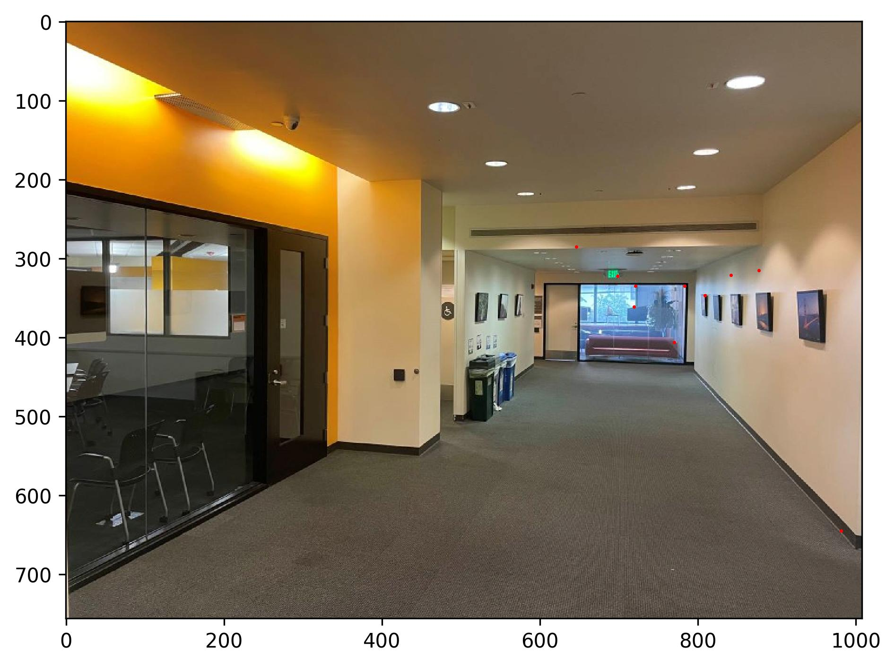
Soda Left RANSAC Points, $\epsilon = 3$ |
Soda Right RANSAC Points, $\epsilon = 3$ |
Part 5: Blending Images Into a Mosaic
Similar to before, we can compute a homography matrix from these points, and from this homography matrix, we can warp one image to the other. After warping, we can blend the images together to create a mosaic. Take a look at the results below.
Example 1: Soda Hall
|
Manually Stitched |
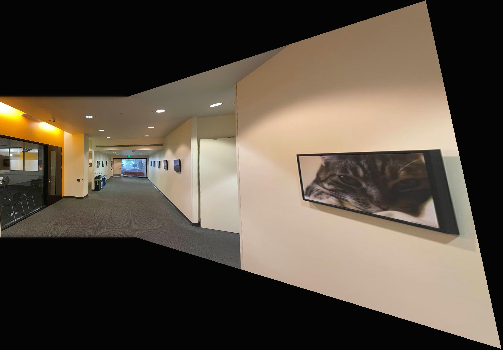
Automatically Stitched |
Due to the differences in correspondence points, we see that the mosaics are different in terms of the warp. Nevertheless, both mosaics look quite similar.
Example 2: Hearst Mining Building
|
Manually Stitched |
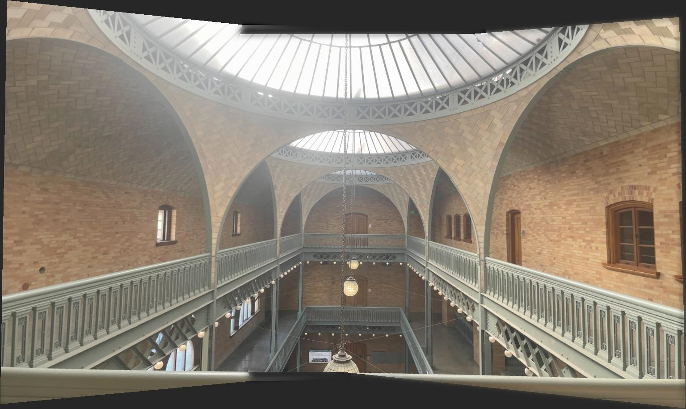
Automatically Stitched |
For this example specifically, I struggled with getting enough correspondence points using the default hyperparameters. More specifically, I was struggling with getting correspondence points from the left warp. I experimented with changing to different hyperparameters around, including changes to the $n$ number of points from ANMS, threshold ratio $t$ from performing nearest neighbor, and changes to $\epsilon$ in the RANSAC algorithm. After a while, I found that increasing $n$ to $n = 1250$, lowering $t$ for the left warp down to $t = 0.3$, and also increasing $\epsilon$ to $\epsilon = 6$ for the left warp produced the best mosaic.
Example 3: Sturdy the Bear
|
Manually Stitched |
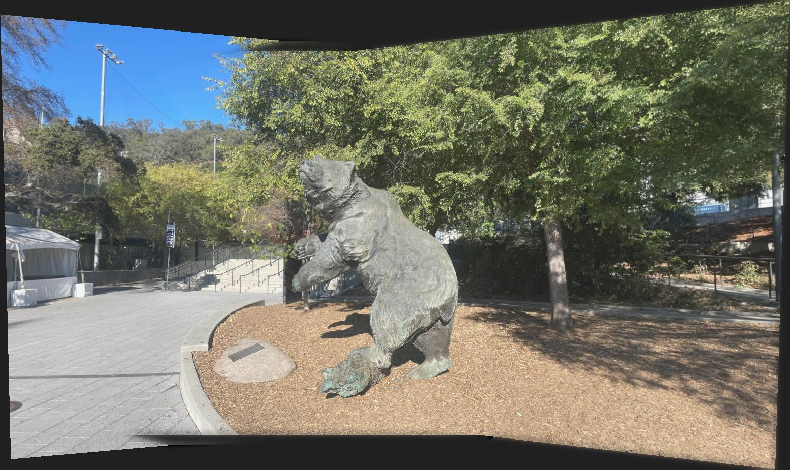
Automatically Stitched |
This mosaic was done under the default hyperparameters. Looks quite accurate when compared to the manually stitched mosaic!
Project Insights
I enjoyed reading the research paper and implementing all the algorithms needed to automatically generate correspondence points. I also enjoyed playing around with all the hyperparameters to get my image to look correctly.
Citation
- Website Template is from CS184
- Tool used to define correspondence points can be found in this link
- Multi-Image Matching using Multi-Scale Oriented Patches by Brown et al.